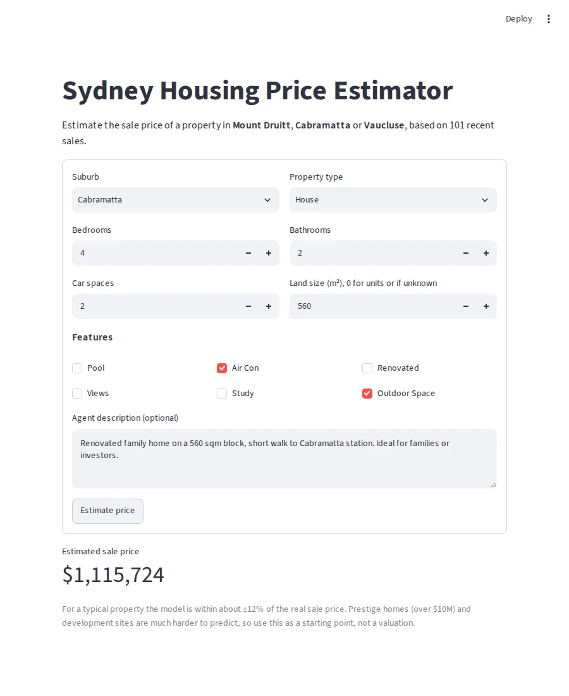
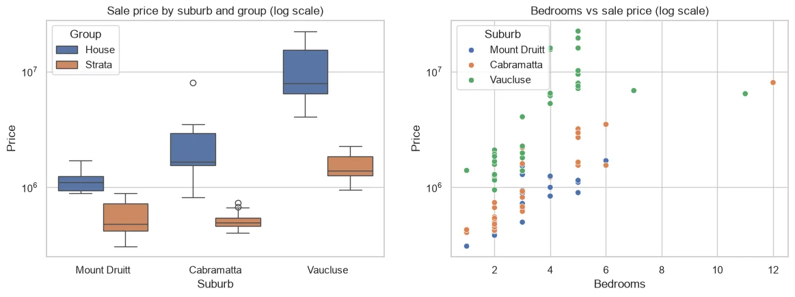
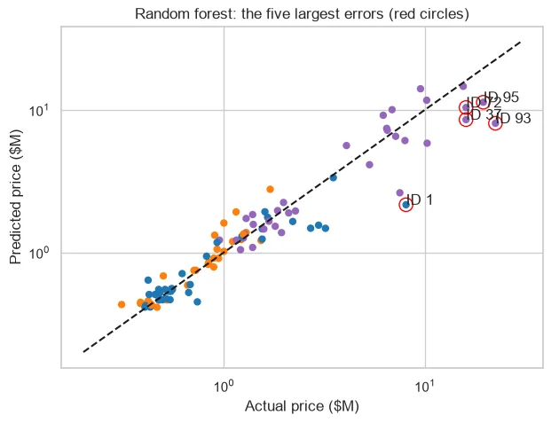
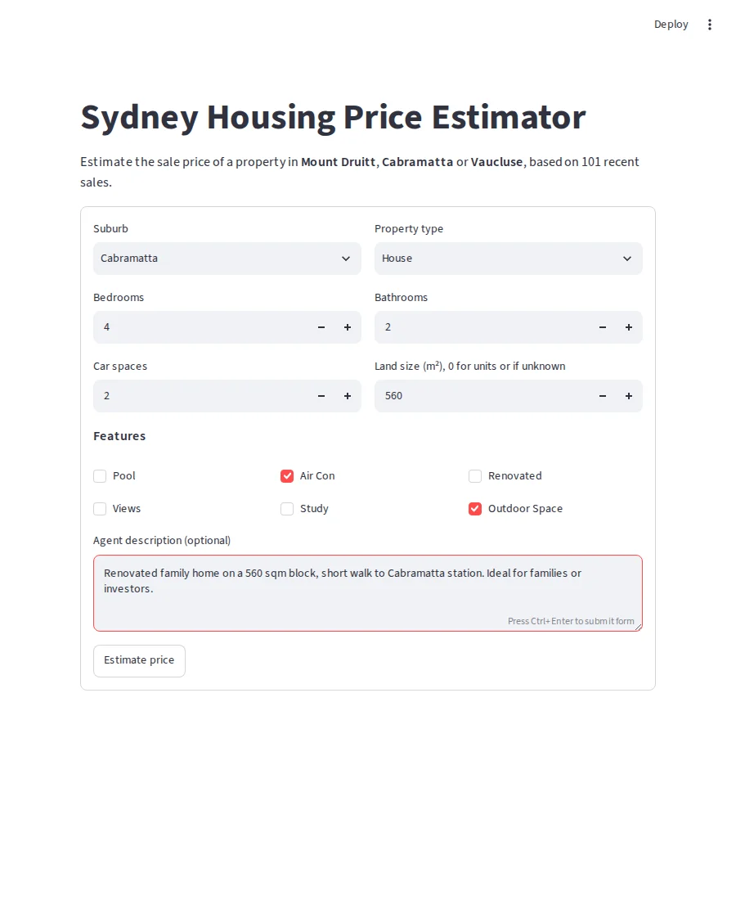

Sydney Housing Price
A quick second opinion for real estate agents: type in a property's details and get an estimated sale price in seconds.

The question
Can one model price homes across three very different Sydney markets?
- Mount Druitt: entry level, first-home buyers and investors
- Cabramatta: mid range, families and investors
- Vaucluse: harbour-side prestige
The same house can be worth very different amounts depending on where it is, so the model has to learn that.
The data
I opened 101 sold listings on realestate.com.au and domain.com.au and typed each one into a spreadsheet, including the agent's description.
- Year built (98%) and building size (83%) were almost never listed, so I left them out.
- I turned agent descriptions into keyword features, like harbour views, luxury words and "investor" language.
- Suburb and property type had to be read together. Cabramatta's median looks low only because most of its sales were units.

What I did
Prices were very skewed, so I predicted log(price). Then I compared three model families with cross-validation.
| Model | Test RMSE (log) | Average error | Median error |
|---|---|---|---|
| Ridge regression | 0.337 | 25.2% | 15.4% |
| Random forest | 0.303 | 19.0% | 12.2% |
| Gradient boosting | 0.306 | 19.7% | 12.6% |
I chose the random forest. It had the lowest error and it fails safely. Ridge guessed $18.7M for four apartments that sold together for $6.45M. The forest can't go that far off.
What I found
- Ordinary homes are easy. Median error was about 8% in Mount Druitt.
- Prestige homes are hard. Median error for Vaucluse houses was 38%.
- The biggest miss was a $22.41M harbour-view home, predicted at $8.04M. Its value came from views of the Opera House and Bridge, which my features couldn't capture.

The app
I built the app in Streamlit and hosted it on Streamlit Community Cloud. It shows the estimate along with a clear warning that prestige homes and development sites are harder to predict.

What I learned
- Understanding the data mattered more than the model. All three models ended up within about 0.03 log RMSE of each other.
- One number can hide a lot. Ridge looked fine on log error but was the worst in dollars.
- The worst predictions taught me the most, including a data-entry mistake of my own.